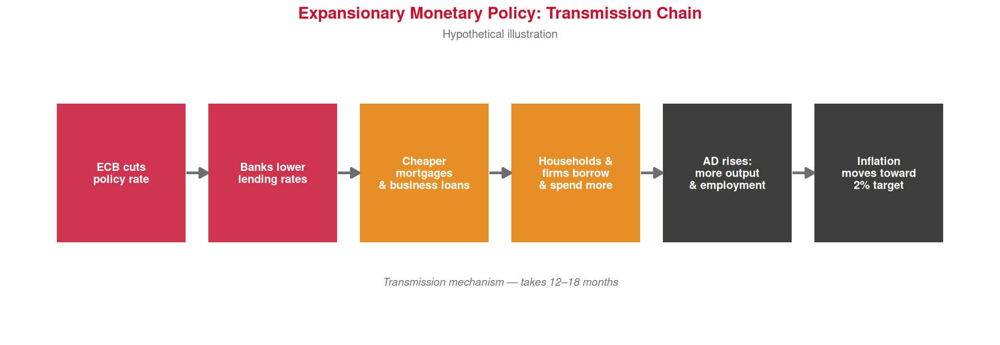

steps <- data.frame(
x = 1:6,
label = c(
"ECB cuts\npolicy rate",
"Banks lower\nlending rates",
"Cheaper\nmortgages\n& business loans",
"Households &\nfirms borrow\n& spend more",
"AD rises:\nmore output\n& employment",
"Inflation\nmoves toward\n2% target"
),
col = c(ue_red, ue_red, "#E07B00", "#E07B00", ue_black, ue_black)
)
ggplot(steps) +
geom_tile(aes(x = x, y = 1), width = 0.85, height = 0.7,
fill = steps$col, alpha = 0.85) +
geom_text(aes(x = x, y = 1, label = label),
color = "white", fontface = "bold", size = 3.1,
lineheight = 0.9) +
geom_segment(
data = data.frame(x = 1:5 + 0.43, xend = 1:5 + 0.57, y = 1, yend = 1),
aes(x = x, xend = xend, y = y, yend = yend),
arrow = arrow(length = unit(0.25, "cm"), type = "closed"),
color = ue_gray, linewidth = 1
) +
annotate("text", x = 3.5, y = 0.45,
label = "Transmission mechanism — takes 12–18 months",
color = ue_gray, size = 3, fontface = "italic") +
xlim(0.5, 6.5) + ylim(0.2, 1.6) +
theme_void() +
labs(title = "Expansionary Monetary Policy: Transmission Chain",
subtitle = "Hypothetical illustration") +
theme(
plot.title = element_text(color = ue_red, face = "bold", size = 13,
hjust = 0.5),
plot.subtitle = element_text(color = ue_gray, size = 9, hjust = 0.5)
)